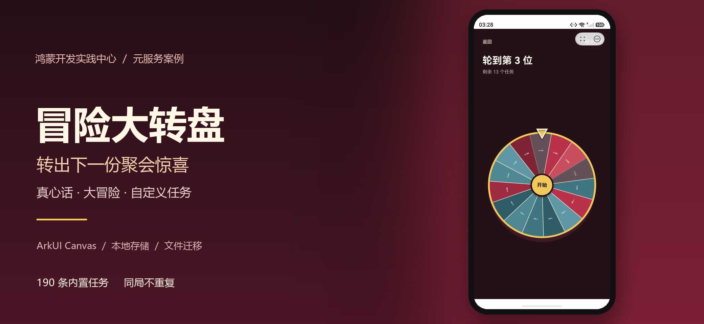
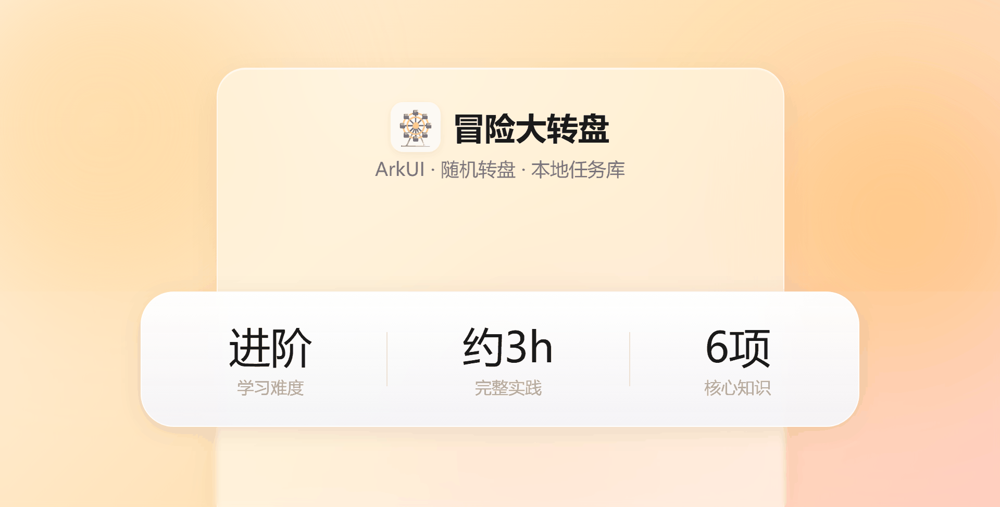
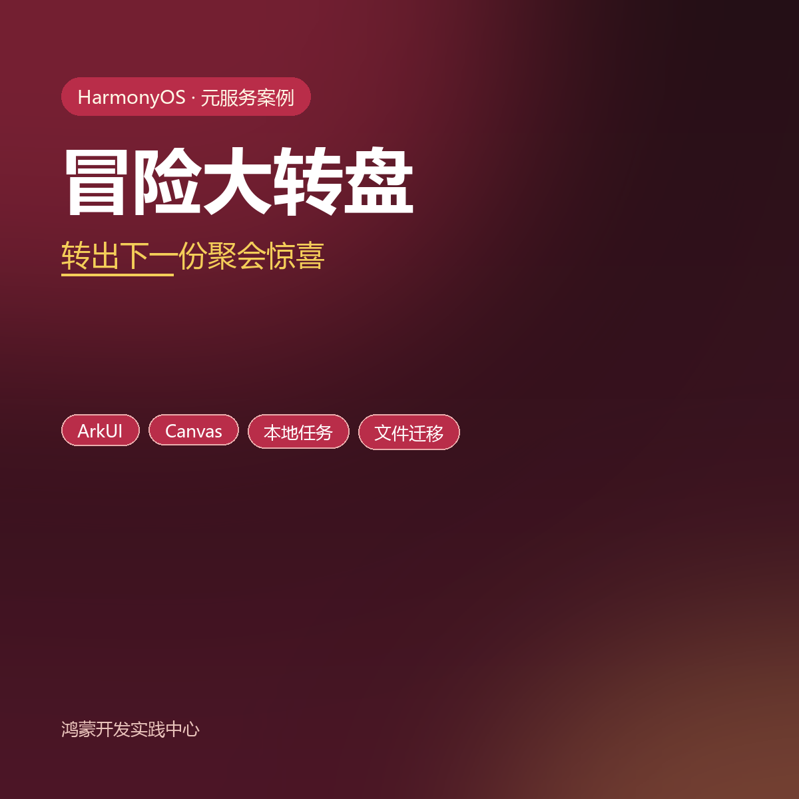
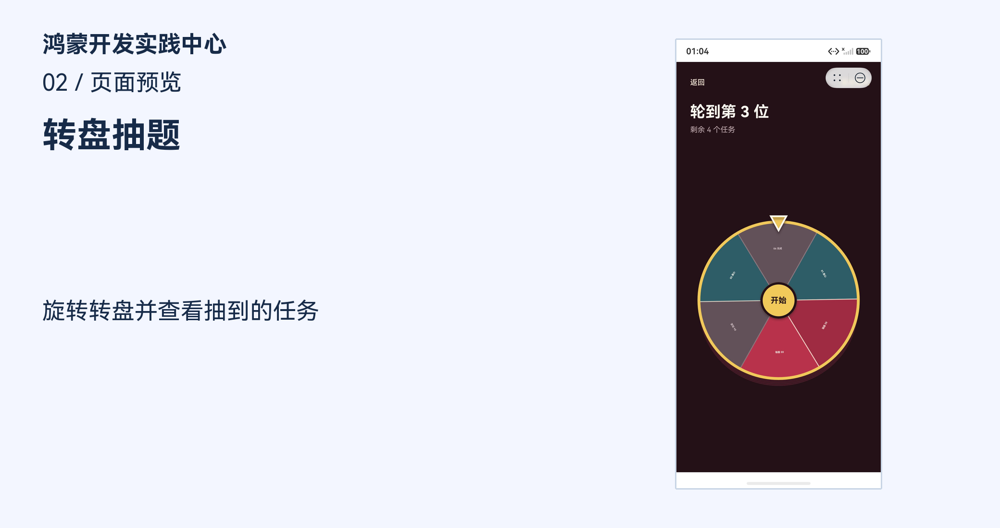
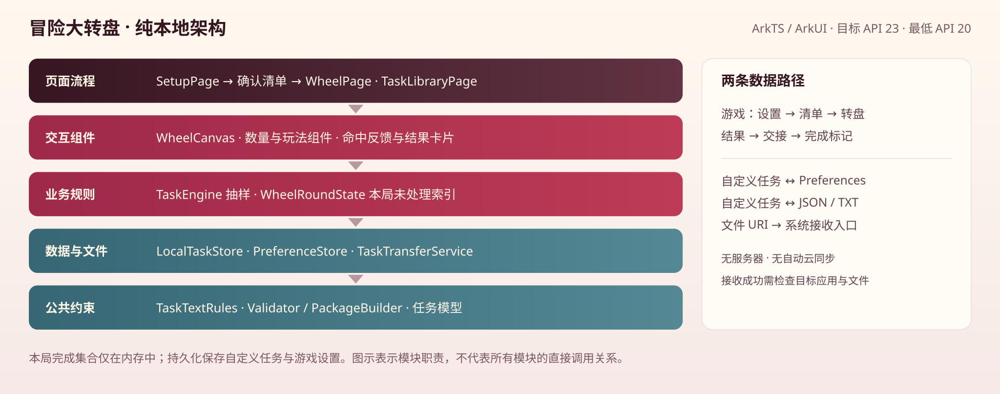

2026-10-16 按 harmony-case-generator（db59f223）重制，保持樱桃可乐主题。教程与当前 README 同步，画面来自 2026-10-02 API 24 模拟器原图，非本次重新运行。平台实际导入与渲染尚待验收。
横版封面

列表卡片

分享缩略图

手机转盘预览

技术架构

鸿蒙开发实践中心 · 元服务案例
转出下一份聚会惊喜
2026-10-16 按 harmony-case-generator（db59f223）重制，保持樱桃可乐主题。教程与当前 README 同步，画面来自 2026-10-02 API 24 模拟器原图，非本次重新运行。平台实际导入与渲染尚待验收。




